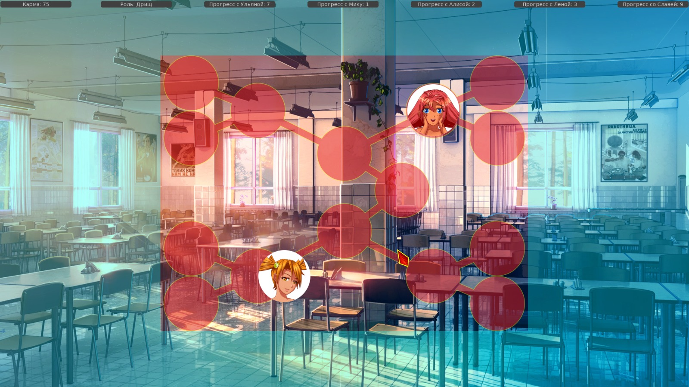
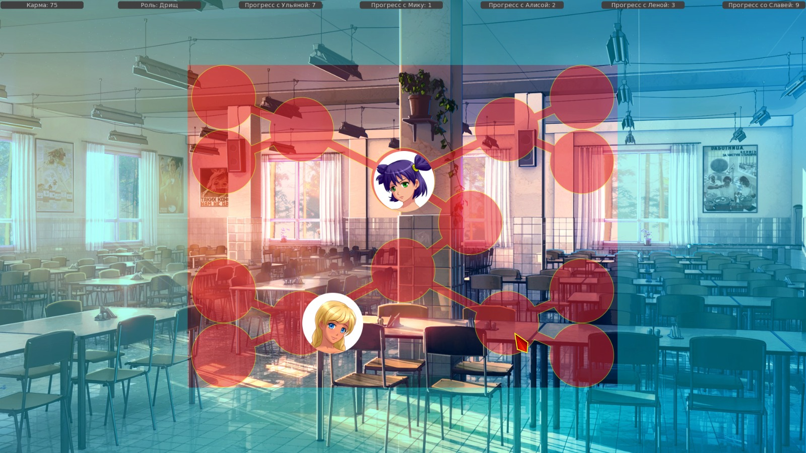
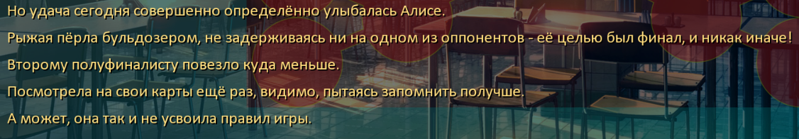
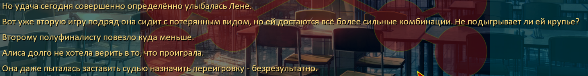
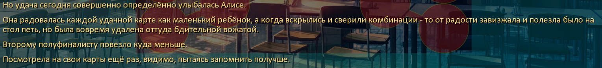
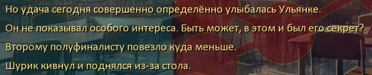
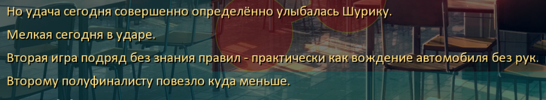

7 дней лета, билд 0.23d (Славя-классик, д.5)
Страница 10 из 11 •  1, 2, 3 ... , 9, 10, 11
1, 2, 3 ... , 9, 10, 11
Re: 7 дней лета, билд 0.23d (Славя-классик, д.5)
автор Dantiras в Пн 28 Сен 2015 - 2:23
alt_route_common
1545 "И оттого в голове царил сущий хаос, про вещи типа гордости или силы воли даже не вспоминалось.." А. Нужно тире вместо запятой. Б. Нужно троеточие вместо двух точек
6341 dreamgirl "Ладно, ладно. Не кипятись. Сходи лучше, поздоровайся, вы за сегодня и парой слов не перекинулись." Нужно тире вместо запятой.
11130 "Я толкнул Ульянку локтем" Нужна точка
alt_route_mi_dj
7345 "Пришлось самому кипятить, самому заваривать лапшичку, чихая от сушёных овощей и экстра-термоядерной приправы." Слитно
7513 " {i}Похоже, она только-только разогрелась, начала получать удовольствие от выступления- вон, как раскраснелись щёки, вон как блестят глаза.{/i} " Нужен пробел
9470 "Музыка была в модном то время полу-коммерческом лаунже, и я решил, что это Моби в очередной раз выдал что-нибудь под заказ какой-нибудь БМВ. Так что итоговый момент с гуглохромом стал для меня неожиданностью. Но всё это не имело значения." Слитно
9568 mi "Да? Не знаю. Я вообще хотела что-нибудь из сценических костюмов взять. Хотя бы мой привычный «кибер-костюм»." Слитно
11721 "Иногда хочется закрыть глаза - и вернуться в лагерь, туда, где ты заходишь ко мне в гости, прячущей слёзы под чёлкой, ярость под ударами по клавишам." Иногда хочется закрыть глаза и вернуться в лагерь - туда, где ты ... и т.д. или Иногда хочется закрыть глаза: вернуться в лагерь - туда, где ты ... и т.д.
12233 "Поэтому у меня есть мой оранжевый корешок, загран-паспорт с глупой наклейкой на задней страничке и одобренная японская виза." Слитно
12239 "Я - твой искин, запертый в облаке где-то в кибер-пространстве." Слитно
alt_res_card_shuffles
1490 dv "Поддавался, значит, сам дурак." Нужно тире вместо запятой.
Логика
alt_route_common
№1 alt_day1_lena Строки 6334-6346
- Код:
if alt_day1_random_val == 1:
dreamgirl "Чувак, присмотрись внимательнее. {w}Неужели, ты не узнаёшь её?"
th "В смысле? Я знаю, что её зовут Лена…"
dreamgirl "Дурак, она же вылитая…"
th "Да?"
dreamgirl "Мать твоих детей!"
th "Блин, да иди ты, чудище скабрезное."
dreamgirl "Ладно, ладно. Не кипятись. Сходи лучше, поздоровайся, вы за сегодня и парой слов не перекинулись."
else:
"Очень ценное умение - верить в чудо."
"Не знаю, смог бы я так, отложив книгу, грезить наяву о каких-то чудесных приключениях и странах."
"Но почему бы не спросить её об этом?"
"Хотя бы о том, что за книжка так сильно её впечатлила."
Возможное решение Вместо в строке 6334 alt_day1_random_val == 1 использовать условие канон дня №1 (alt_day1_random_val != 1).
№2 alt_day2_dinner Строки 10248-10253
- Код:
else:
mi "Я тебя раньше не видела здесь. Ты новенький?"
me "Да… Я сегодня ходил с маршрутным листом же, подписи собирал…"
mi "Значит, ко мне в клуб не заглянул. Я Мику."
$ meet('mi','Мику')
"Она протянула руку через стол, и я поспешил ответить на рукопожатие."
Возможное решение Дописать отыгрыш под вариант alt_day1_random_val == 1 с отсутствующим флагом alt_day2_mi_met2.
№3 alt_day2_dinner Строки 11125-11139
- Код:
else:
"Здесь же находилась какая-то незнакомая девочка с угрожающе-жёлтыми глазами."
"Неприятный эффект от её взгляда немного гасили очки с толстыми стёклами."
"Но только немного."
hide mz with dissolve
"Я толкнул Ульянку локтем"
me "Псс, Ульянка, это кто?"
show us smile sport at right with dissolve
us "Где?"
me "Вон, в очках!"
us "Аа… Это Женька. Библиотекарша наша. Постоянно спит в библиотеке."
me "Спит?"
us "Ага! Она спит, а Шурик с Электроником за неё книжки сторожат."
us "И все делают вид, что они заняты в стенгазете."
us "По-моему, там только Лена работает. Рисует."
Возможное решение Поставить после оглашения имени Жени $ meet('mz','Женя').
alt_res_card_shuffles
alt_day2_hf_analizer
№1 Визуальный баг со стартовым расположением иконки победившего ГГ персонажа в строках 3310-3371.
- Скриншоты:


№2 В случае проигрыша в полуфинале может неверно протекать анализ ситуации за вторым полуфинальным столом. При победе участника вышедшего из четвертьфинального стола №1 ("левая часть сетки") текст воспроизводится логически верно:
- Примеры верного воспроизведения текста:


- Неверное воспроизведение:




Dantiras- Мизантроп

- Сообщения : 615
Дата регистрации : 2015-08-17
Re: 7 дней лета, билд 0.23d (Славя-классик, д.5)
автор 7dl-kun в Пн 28 Сен 2015 - 17:10

7dl-kun- Находка для шпиона

- Сообщения : 3026
Дата регистрации : 2014-09-07
Откуда : здесь столько наркоманов?
Re: 7 дней лета, билд 0.23d (Славя-классик, д.5)
автор Dantiras в Пн 28 Сен 2015 - 18:24
Об идее мне известно. Карточный турнир я опубликовал в том числе до того, чтобы показать большие проблемы в анализаторе турнирной ситуации, заложенные в текущем варианте. Чем такие ошибки исправлять в дальнейшем, проще изначально выработать альтернативную концепцию работы анализатора.7dl-kun пишет:За багреп спасибо, но турнир я пока не трогаю вовсе - ему, судя по всему, предстоит суровый такой ревамп на основе заявленной идеи с ГСЧ.
Dantiras- Мизантроп
- Сообщения : 615
Дата регистрации : 2015-08-17
Re: 7 дней лета, билд 0.23d (Славя-классик, д.5)
автор nuttyprof в Пн 28 Сен 2015 - 18:32
Движок турнира готов, катаю его на релизе мода 023.d (отрабатывался на 022.b).
- Спойлер:
- Там же и покер.

nuttyprof- Хикка

- Сообщения : 102
Дата регистрации : 2015-05-25
Возраст : 45
Откуда : Юг
Re: 7 дней лета, билд 0.23d (Славя-классик, д.5)
автор Коллекционер в Пн 28 Сен 2015 - 18:47
- 4 день Юля Ужин:
- I'm sorry, but an uncaught exception occurred.
While running game code:
File "game/scenario_alt/Scenario/WIP/queue/alt_route_uv.rpy", line 1203, in script
File "game/scenario_alt/Scenario/WIP/queue/alt_route_uv.rpy", line 1203, in python
NameError: name 'alt_day0_prologue' is not defined
-- Full Traceback ------------------------------------------------------------
Full traceback:
File "F:\Everlasting Summer\renpy\execution.py", line 288, in run
node.execute()
File "F:\Everlasting Summer\renpy\ast.py", line 1486, in execute
if renpy.python.py_eval(condition):
File "F:\Everlasting Summer\renpy\python.py", line 1338, in py_eval
return eval(py_compile(source, 'eval'), globals, locals)
File "game/scenario_alt/Scenario/WIP/queue/alt_route_uv.rpy", line 1203, in <module>
if alt_uvao_D4_viola_morning and alt_day0_prologue:
NameError: name 'alt_day0_prologue' is not defined
Windows-7-6.1.7601-SP1
Ren'Py 6.16.3.502
Everlasting Summer 1.0

Коллекционер- Мизантроп
- Сообщения : 929
Дата регистрации : 2015-09-19
Re: 7 дней лета, билд 0.23d (Славя-классик, д.5)
автор 7dl-kun в Пн 28 Сен 2015 - 21:27
Не вижу смысла. Без знания того, как будет работать механика рандомизатора вносить какие-то предварительные правки - это всё равно что подпирать несуществующую крышу.Dantiras пишет:Об идее мне известно. Карточный турнир я опубликовал в том числе до того, чтобы показать большие проблемы в анализаторе турнирной ситуации, заложенные в текущем варианте. Чем такие ошибки исправлять в дальнейшем, проще изначально выработать альтернативную концепцию работы анализатора.7dl-kun пишет:За багреп спасибо, но турнир я пока не трогаю вовсе - ему, судя по всему, предстоит суровый такой ревамп на основе заявленной идеи с ГСЧ.
7dl-kun- Находка для шпиона
- Сообщения : 3026
Дата регистрации : 2014-09-07
Откуда : здесь столько наркоманов?
Re: 7 дней лета, билд 0.23d (Славя-классик, д.5)
автор nuttyprof в Пн 28 Сен 2015 - 21:40
Багрепорты, отзывы, тапки и гнилые помидоры - в ту же тему прошу.
nuttyprof- Хикка
- Сообщения : 102
Дата регистрации : 2015-05-25
Возраст : 45
Откуда : Юг
Re: 7 дней лета, билд 0.23d (Славя-классик, д.5)
автор 7dl-kun в Пн 28 Сен 2015 - 21:44
7dl-kun- Находка для шпиона
- Сообщения : 3026
Дата регистрации : 2014-09-07
Откуда : здесь столько наркоманов?
Re: 7 дней лета, билд 0.23d (Славя-классик, д.5)
автор Arlien в Ср 30 Сен 2015 - 19:06
- Спойлер:
Правильно понял, что там попытка убрать обнаженку на первое прохождение?
Arlien- Людовед

- Сообщения : 1322
Дата регистрации : 2014-09-08
Re: 7 дней лета, билд 0.23d (Славя-классик, д.5)
автор 7dl-kun в Ср 30 Сен 2015 - 19:40
7dl-kun- Находка для шпиона
- Сообщения : 3026
Дата регистрации : 2014-09-07
Откуда : здесь столько наркоманов?
Re: 7 дней лета, билд 0.23d (Славя-классик, д.5)
автор Arlien в Ср 30 Сен 2015 - 20:23
Arlien- Людовед
- Сообщения : 1322
Дата регистрации : 2014-09-08
Re: 7 дней лета, билд 0.23d (Славя-классик, д.5)
автор Surv в Чт 1 Окт 2015 - 0:56
Можно и спрайт воткнуть,такие есть вроде,где обнажёнка.Тянет на категорию 16+Arlien пишет:В нынешнем виде выглядит довольно странно. ИМХО тут либо трусы, либо крестик... Либо по хентайной галочке хотя бы.
А вообще по поводу Х-сцен (если такие ещё есть) можно сделать какой-то определённый флаг,чтобы сцена была с цг или без
Surv- Хикка
- Сообщения : 114
Дата регистрации : 2015-06-06
Re: 7 дней лета, билд 0.23d (Славя-классик, д.5)
автор 7dl-kun в Чт 1 Окт 2015 - 1:23
Тут скорее крестик. Потому что определённая разница всё-таки есть, что в репликах, что в реакциях. Ну и да, никакой обнажёнки под первое прохождение.Arlien пишет:В нынешнем виде выглядит довольно странно. ИМХО тут либо трусы, либо крестик... Либо по хентайной галочке хотя бы.
7dl-kun- Находка для шпиона
- Сообщения : 3026
Дата регистрации : 2014-09-07
Откуда : здесь столько наркоманов?
Re: 7 дней лета, билд 0.23d (Славя-классик, д.5)
автор Dantiras в Пт 2 Окт 2015 - 0:22
alt_route_un_7dl
1648 "Не то, чтобы у меня был обширный опыт подобного рода ласок, но я всегда считал, что самое главное в них - это искренность касаний." А) Между частями выражения не то чтобы запятая не ставится (проходит по правилам, как частный случай фразеологического оборота); Б) Думаю, тут не о хищном млекопитающем семейства куньих речь идёт. Потому ласк.
171 sl "Не то, чтобы мне было дело до ваших отношений, я вообще противница любых попыток лезть в чужую жизнь…" См. выше.
381 "Их никто не высмеивал. {w}Не то, чтобы боялись - напротив - ценили, что взрослый человек выгадал время, перебросил отпуск и вместо того, чтобы печься о хлебе насущном, выбрался к гости к ребёнку на целый день." См. выше.
5334 sl "Не то, чтобы я была против: до твоего появления она всё делала из-под палки, даже рисовала неохотно, а ты на неё как-то повлиял." См. выше.
5664 "Не то, чтобы это обязательно надо было говорить, но раз уж вызвался играть роль невинной жертвы приставаний…" См. выше.
5671 me "Не то, чтобы я был в претензии, но тебе не кажется, что идея раздеть меня у тебя несколько… Хм… Навязчива?" См. выше.
6984 "Не то, чтобы у неё был обширный выбор." См. выше.
8486 me "Не то, чтобы сбежала…" См. выше.
10145 "И не то, чтобы я был против такой метаморфозы – всё лучше, чем застенчивый ребёнок образца первых двух дней, но…" См. выше.
alt_route_common
3646 sl "Я за тебя, Ольга Дмитриевна за наш отряд, а начальник — за весь лагерь." Нужны тире.
7342 dv "Да у него не получится, кишка тонка!" Нужно тире
8934 dv "Конечно, вишу. Сейчас дождёмся его выхода, вместе повиснем." Нужно тире вместо запятой
9213 un "Может, лучше сделать как они хотят?" Нужна запятая
9226 "Шурик немного покраснел — видимо, мои слова пришлись не совсем ко двору, — однако быстро успокоился и принялся яростно расшвыривать бумажные залежи на столе в поисках непонятно чего." Лишняя запятая
14458 th "И я наконец смог, пусть и под самый вечер, выбраться на берег." Обособить запятыми вводное слово
14463 "Перекатываясь, волны искрились и слепили глаза, так что приходилось щуриться." слепили глаза так, что
14472 "Я расстегнул рубашку, сунув надоевший уже галстук в карман, и невольно обернулся, прежде чем стянуть шорты." _прежде, чем
14477 "Одно только удручает - плавать придётся в труселях, плавок нет." Одно только удручает: плавать придётся в труселях - плавок нет.
14580 "Ну а я что, железный, что ли…" Ну а я что - железный что ли...
14604 "Как гласит первое инженерное правило, если вещь долго ломать, она в итоге сломается." Нужно двоеточие вместо запятой
14709 "На удивление, она была здесь! {w}Уже переодетая, с самым скучающим выражением на лице, она всем своим видом давала понять, что уже устала ждать, пока «этот тормоз» наконец придёт." Второе уже лишнее. Иначе слишком много усилительных конструкций на одно несчастное действие, да ещё и необоснованный повтор
14714 "Я заметил свёрток с моей одеждой, лежащий здесь же и мгновенно развернул его." Нужна запятая: закрываем причастный оборот.
14735 "Двачевская злая, агрессивная, азартная и озорная - это мы уже видели. Ещё видели Двачевскую смущённую, задумчивую. А сейчас нас пустили за кулисы, и дали полюбоваться на Двачевскую настоящую." Лишняя запятая
25059 " {i}Мы и правда писали и созванивались каждый день, висели на линии часами, какие-то дикие счета за телефон оплачивали, прежде чем открыли для себя интернет-телефонию.{/i} " Обособить запятыми
23533 extend ", и я поневоле проследил за всеми изгибами и выпуклостями, прежде чем понял, что она мне что-то говорит." _прежде, чем
25131 "То, что возбуждает и сводит с ума любовников всего мира - если, разумеется, они успели принять душ, прежде чем перейти непосредственно к действиям." _прежде, чем
Dantiras- Мизантроп
- Сообщения : 615
Дата регистрации : 2015-08-17
Re: 7 дней лета, билд 0.23d (Славя-классик, д.5)
автор Dantiras в Вс 4 Окт 2015 - 3:07
alt_route_un_7dl
2274 "Похлопав себя по карманам я, заговорщически огляделся и запер помещение." ... по карманам, я заговорщически
2276 me "И, боюсь, что не все здесь разделяют мои взгляды." Лишняя запятая
2282 me "Где взял, где взял… Где взял, там больше нет." Тире вместо запятой
2285 me "Вообще, она их сама оставила, когда меня кормила в первый день, вот я их и прихватизировал." Тире вместо запятой
2288 "Я кивнул и направился в сторону сцены - в свете приближающегося концерта, логичнее всего было ожидать нашего худрука именно там." Лишняя запятая
2369 un "Разве что детишек совершенно напрасно укатал, они теперь этот танец возненавидят." Тире вместо запятой
2384 me "Мику, возьми небольшой перерывчик, и расскажи нам всё, что можешь о будущем концерте!" Две лишние запятые
2403 "Я только улыбнулся. Дело хозяйское, фитиля потом от Ольги Дмитриевны не мне вставят." Двоеточие вместо запятой
2420 mi "Из действительно интересного только это. Но я ещё не все номера отсмотрела." Нужно тире
2432 "Ты разве забыл? Мы же на бадминтон записаны оба. Сегодня чётное число, значит, теннисисты отдыхают, а мы играем." Тире вместо запятой
2522 "Ну да, после порции сладкого, рандом обычно всегда подсовывает пару килотонн дёгтя." Лишняя запятая
2533 ba "Да потому, дорогой мой пионер, что мне насрать, вы хоть что хотите делайте, но не на моём корте." Двоеточие вместо запятой
2541 ba "До полдника как раз сорок минут, успеете." Тире вместо запятой
2554 un "Не могу понять, что тебя больше расстроило - бесцеремонность тренера или совпадение с твоими планами?" Двоеточие вместо тире
2653 me "Вехи всего две - твой следующий год с поступлением в художественное, и моё возвращение из армии через три года." А. Двоеточие вместо тире; Б. Лишняя запятая
3028 "Она сидела, положив голову мне на плечо, а я, обнимая её за талию…" Тире вместо запятой
3178 "Я, наконец распознал тот волнующий сладкий цитрусовый аромат, исходящий от её забавной причёски." Лишняя запятая. "Наконец" выступает в этом предложении в роли обстоятельства, а не вводного слова
3218 me "Так что мой лучший друг это ты. И по совместительству, девушка." Нужно тире
3309 "Моя мечта, мой сон… В её поведении не было какого-то дополнительного подтекста, она просто пришла и улеглась мне под бок." Тире вместо запятой
3741 me "Открывай и обматывайся, будем с тобой как римские патриции." Тире вместо запятой
3794 un "Чая напились, отогрелись, что дальше?" Тире вместо запятой
3844 "Мне снилось что я проснулся." Нужна запятая
3892 "Она сильно толкнула меня в плечо, разворачивая на спину и, немного подумав, села сверху, прижав меня к матрасу." матрацу
4171 mt "Идите ужинать. Но не забывайте, после ужина костёр. Если вы и его пропустите…" Двоеточие вместо запятой
4212 dreamgirl "Не язви, девочке одиноко здесь, а из-за дождя носиться по лагерю, задрав хвост, не выходит." Двоеточие вместо запятой
4515 me "Я не высмеиваю, я ищу позитивчиков. Знаешь, такие как феи, прозрачные, весёлые. Позитивчики." Двоеточие вместо запятой
4650 "Он помог мне подхватить стол и оттащить его к стенам и тут я обратил внимание на некую непривычную деталь." Нужна запятая
4788 me "Да плевать. Распишись здесь, и возьми поле на угловой стол, чтобы по всей столовке шашки не разлетелись." Лишняя запятая
4809 "Дождь меланхолично барабанил по стеклам, пионеры неторопливо перемещали фишки по полям, в помещении царила атмосфера ленивой расслабленности, и потому явление Ольги Дмитриевны заставило меня вздрогнуть." Тире вместо запятой
Dantiras- Мизантроп
- Сообщения : 615
Дата регистрации : 2015-08-17
Re: 7 дней лета, билд 0.23d (Славя-классик, д.5)
автор Dantiras в Чт 8 Окт 2015 - 20:39
alt_route_un_7dl
12 "Разве что какие-нибудь циклоны-антициклоны? Типа, дует с речки, значит выстужает лагерь, нет?" А. Тире вместо запятой; Б. Нужна запятая
35 th "Так, стоп! Мне и утренних мужских доброутров хватает, давай не будем усугублять!" Тире вместо запятой
39 dreamgirl "Наверное, ты забыл, но вообще-то, на тебя запали." Лишняя запятая. При противопоставлении частей предложения (например, ССП) "вообще-то" выступает в роли усилительной частицы, а не междометия
41 dreamgirl "Ненужный кейс с рисовальными принадлежностями, твоё сомнение о том, зачем ты нужен, она, вцепившаяся тебе в руку." Точки с запятой вместо запятых
46 dreamgirl "Единственное красное словцо, уместно здесь сейчас - это надпись «осёл» маркером цвета фуксии у тебя на лбу." Уместное
55 dreamgirl "Притом, что сама она публику не сказать, чтобы жалует - а пока тискала тебя втихую на понтонах под аккомпаненент ора вожатой, чуть от восторга не хохотала…" Аккомпанемент
59 dreamgirl "Так вот, тебя интересует сам факт контакта или ты предпочитаешь смаковать такие сцены в подробностях?" Нужна запятая
74 mt "Ну… Я передала посылку, моя совесть чиста." Тире вместо запятой
130 "Простенькое, эгоистичное расстройство по поводу отсутствия симпатичного человечка начало сменяться нешуточным таким беспокойством." Лишняя запятая
171 sl "Не то, чтобы мне было дело до ваших отношений, я вообще противница любых попыток лезть в чужую жизнь…" Двоеточие вместо запятой
176 me "Не каждый бы сделал подобное для товарища. Спасибо тебе ещё раз, ты лучше всех!" Двоеточие или тире вместо запятой. Зависит от идеи фразы: если "спасибо" сказано благодаря тому, что "ты лучше всех" - двоеточие; если же "спасибо", так что "ты лучше всех" - тире
195 "Блин, да если представить хотя бы, что они всю жизнь только такими полотенцами утираются - там кожа не то, что огрубевшая - ороговевшая!" А. Двоеточие вместо тире; Б. "не то что" - одна единая союзная конструкция, поэтому внутри неё запятые не ставятся
221 th "Но я думаю, чувствую и поступаю как семнадцатилетний пионер, с яркостью чувств, присущей лишь юным." Нужна запятая
240 "Раз уж сказали, что у родителей - значит, у родителей!" Лишняя запятая. Объяснение: Здесь опущен глагол "есть" в форме инфинитива. При употреблении "значит" после тире, но перед инфинитивной формой глагола, запятая не ставится никогда.
268 sl "Я всё, конечно, понимаю, ты беспокоишься и так далее, но ты же нас сейчас перед родительским отрядом опозоришь!" А. Двоеточие вместо запятой; Б. Тире вместо запятой
288 "Я постарался скрыть довольную улыбку, расползающуюся по лицу и, развернувшись, побежал в сторону библиотеки." Нужна запятая
296 "Какие здесь все хорошие… Жизнь научила меня того, что чем приторнее поначалу, тем гаже будет яма, куда меня неизбежно макнут." Тому
298 "Но всё это будет потом. {w}Раз у меня нет «завтра», живём сегодня." Тире вместо запятой
306 "То есть, в данном временном промежутке, наверное, всё же милицейский." "То есть" никогда не выделяется запятыми, поскольку является союзом или частицей, а не междометием
311 "Вряд ли бы у меня получилось провернуть этот трюк со Славей - всё-таки по части бесшумного передвижения, она и мне, и всем моим знакомым сто очков вперёд даст - но с рассеянной художницей всё получилось на «ять»." А. Лишняя запятая; Б. Так задумано, или всё же пять?
322 me "Мне тут сказали, ты родителей повела хвастаться своими художествами." Тире вместо запятой
324 un "Оценили мои художества как небезнадёжные, и укатили." Или лишняя запятая, или если необходимо было показать логическую паузу в предложении - тире
325 me "Неудивительно что похвалили, рисуешь ты на загляденье." Двоеточие вместо запятой
336 un "К тому же, вчера на линейке об этом говорили, где ты был?" Тире вместо запятой
380 "И вот, эти мамочки с папочками, довольно молодые - чуть за тридцать, может, - трогательно держатся за руки, отдают пионерский салют и втрое потешнее выглядят облачённые в стилизованную форму, кое у кого уже не сходящуюся на животе." Лишняя запятая
396 "«Зарница»…Постоянная беготня, грязь, но - море позитива, весь день в лесу и по пол-обоймы на брата за счёт местного ДОСААФ." Пробел после троеточия
403 "Славя как обычно поднимала флаг." Обособить запятыми вводную конструкцию
404 "Ольга как обычно читала благодарственную активистке." См. выше
417 th "Выбирая из всех сокровищ мира тепло рук и блеск глаз так легко обанкротиться." Нужна запятая
420 "Я улыбаюсь ей, радостно, как старой-старой знакомой, и в носу явственно слышен запах питерского метро, под пальцами стылым холодом стеклянные автовские звёзды, и уворованная во время поцелуя «стиморолина» ещё хранит остатки вкуса." А. Лишняя запятая; Б. Нужно тире
440 "И если плеер сдохнет, то до появления USB — с этой точки стартуя — пройдёт всего шесть лет - ей стукнет двадцать два, по-моему, прекрасный возраст для начала поисков." Предложение очень сложное - без скобок не обойтись. И если плеер сдохнет, то до появления USB (с этой точки стартуя, пройдёт всего шесть лет) ей стукнет двадцать два - по-моему, прекрасный возраст для начала поисков
442 dreamgirl "Пустить всё на самотёк затея недурная, но не хотелось бы тебе хотя бы пустить пыль в глаза, попытавшись?" А. Нужно тире; Б. При текущем порядке слов в предложении "попытавшись" выглядит лишним. Если оно принципиально здесь необходимо, то целесообразно заменить его на глагол "попытаться"
446 th "Попробуем ход грибом - пускай пишет адрес, телефон или что там будет важным - на бумажке, сделаем фото. Попробуем ход грибом: пускай пишет адрес, телефон, или что там будет важным, на бумажке - сделаем фото. Тире здесь в роли логической паузы
509 "Со свободными столиками был затык, пришлось примоститься рядышком с сосредоточенно жующей Славей, ответившей на наше приветствие рассеянной улыбкой." Тире вместо запятой
4267 un "Так значит в твоих интересах заканчивать всё побыстрее — обещаю, что присоединюсь к тебе в деле воплощения программы." Нужна запятая
4456 mt "Я не то, что догадываюсь - я прямо знаю, чьих это рук дело." Лишняя запятая
Dantiras- Мизантроп
- Сообщения : 615
Дата регистрации : 2015-08-17
Re: 7 дней лета, билд 0.23d (Славя-классик, д.5)
автор Dantiras в Пт 9 Окт 2015 - 10:20
521 dreamgirl "Может, у них мать просто так готовит - по мужски." по-мужски
537 un "Отец результаты экзаменов привозил, меня приняли на подготовительный в Политех." Тире вместо запятой
540 un "Ну… Мне, как гуманитарию, точные науки сложновато даются, придётся алгебру подтягивать." Тире вместо запятой
575 "И хотя я всё ещё считаю себя бессмертным, нечего даже и надеяться дотянуть нынешнюю калиюгу." кали-югу. Слишком редкое слово для применения принципов авторской орфографии
599 me "Ты одно пойми, тебе не всегда будет шестнадцать, и не всегда ты будешь смотреть в будущее с перепутья." Двоеточие вместо запятой
606 me "И к тридцати годам ты становишься никому не нужной, и оттого цепляющейся за привычное, женщиной, которая, будучи молодой ещё, совершенно разучилась мечтать." Лишняя запятая, или, если всё же требуется разделение смысловых частей, необходимо тире
651 cs "Не посмотришь за машиной, я пока до начальника дойду?" Двоеточие вместо запятой
652 "Я молча кивнул и она, взглядом поблагодарив меня, скрылась за воротами." Нужна запятая
668 "Лена стояла надо мной и самым строгим взглядом из арсенала неласковой девочки, глядела на меня." Нужна запятая
701 me "Знаешь, почему японцы великая нация? {w}Потому что у них кто не поёт, тот рисует." Нужно тире
709 un "У нас ведь нет в городе художки, значит, придётся ехать в Ленинград, в Муху." Тире вместо запятой
710 me "И что? Там собственное общежитие имеется, пристроят, я на всякий случай дам пару контактов - не пропадёшь." А. Тире вместо запятой; Б. Точка с запятой вместо запятой
713 un "Ты так мне и не сказал - а что будет, если я провалюсь?" Двоеточие вместо тире
719 "А это в наше сумрачное время, не в сонном, солнечном совке." Лишняя запятая
734 "Алиса. Что бы ей ни надо было - ничего хорошим оно не могло для меня закончиться." ничем
736 th "Ослик был сегодня зол, он узнал, что он осёл…" Двоеточие вместо запятой
749 dv "Она молчит, когда я спрашиваю её, в чем дело." чём
755 "Она как была, приблизила лицо вплотную к моему и несколько секунд изучала что-то в моих глазах." Нужна запятая
769 dv "Она мне ничего не рассказала, просто разрыдалась и захлопнула дверь в домик. {w}Что у вас произошло?" Тире вместо запятой
779 dv "Скажешь тоже! Ты видел наши выселки? У нас одна художественная школа на весь городок, о каком училище речь!" Тире вместо запятой
794 me "Да я столько таких видел! Да что там, я сам таким был! Подумаешь, по почкам не прошёл отбор, можно было лечь в санаторий долечиться, и свалить в грёбаный космос!" Двоеточие вместо запятой
819 un "Результаты предварительные, всё ещё можно отыграть назад." Тире вместо запятой
Dantiras- Мизантроп
- Сообщения : 615
Дата регистрации : 2015-08-17
Re: 7 дней лета, билд 0.23d (Славя-классик, д.5)
автор Dantiras в Вс 11 Окт 2015 - 3:23
845 me "Я говорю, закроем эту тему." Двоеточие вместо запятой
850 "Ладно, послали, пустяк, дело житейское." Тире вместо запятой
879 "Она отошла к столу и достав из кипы листов ватмана один, перевернула его и подала мне." Нужна запятая
886 "И от дождя его бережёт приснопамятная кофточка, розовая, с пуговичками по периметру декольте, габаритами больше походящая на чехол от танка." Тире вместо запятой
923 un "Это не так. {w}Я тебя выслушала, я сделала выводы." Тире вместо запятой
991 un "Она и была три недели, это ты поздно приехал." Двоеточие вместо запятой
997 "А Лена, безмятежно улыбнулась и, сбросив сандали, осталась босыми ногами на разогретых солнцем досках, играя с залётными бабочками." сандалии
1100 me "Это волкмен… Можешь называть его портативным проигрывателем, несильно погрешишь против истины." Тире вместо запятой
1102 me "Микрофон не очень чувствительный, так тебе придётся находится рядом." Тире вместо запятой
1128 me "Так что я обещал, я делаю. {w}Дальше твой ход - сумеешь ли, а главное - станешь ли ты исполнять обещанное?" Двоеточие вместо тире
1191 me "Эдакий волшебный амулет, который пройдёт с тобой через всё, что бы ни происходило. {w}Он пережил путешествие со мной, значит, переживёт и твоё путешествие." Тире вместо запятой
Dantiras- Мизантроп
- Сообщения : 615
Дата регистрации : 2015-08-17
Re: 7 дней лета, билд 0.23d (Славя-классик, д.5)
автор Dantiras в Вс 11 Окт 2015 - 14:16
alt_route_un_7dl
1214 mt "Раз вы теперь занятые, пожалуй, освобожу вас от кое-каких мероприятий. Уборок, дежурств." А. Тире вместо запятой; Б. Двоеточие вместо точки (и со строчной буквы, естественно)
1250 un "Если ты забыл, мы вчера погорячились немного, когда похищали меня после обеда." Двоеточие вместо запятой
1253 me "Ты что, с жужелицей мириться собралась?!" Тире вместо запятой
1315 "Сжечь её! Сжечь живьём!" Это очевидная мысленная реплика, а не часть повествования - возможно, стоит поставить th перед строкой
1358 "Ведро с тёплой мыльной водой уже ожидало своего часа, там же была грязно-серая тряпка - видимо, жужелице не хватало роста для того, чтобы достать энциклопедию с пола, а на табуретку она по какой-то необъяснимой причине влезать не хотела." Кличка - тоже имя собственное, потому с заглавной буквы
1359 "Ведро было не очень тяжёлое, ну да работа в библиотеке и не подразумевает больших физических нагрузок." Двоеточие вместо запятой
1371 un "Ну… Мы сами виноваты, не надо было кричать на неё." Двоеточие вместо запятой
1397 "Кое-что из истории энциклопедии я помнил - вроде бы, она писалась больше двадцати лет, и каждое последующее издание тяготело к сокращению объёма - по сути, из образования нации выбрасывались целые абзацы." А. Двоеточие вместо тире; Б. Лишняя запятая ("вроде бы" - частица, поэтому никогда не обособляется)
1405 "Она приглашающе мотнула головой, мол, слезать пора, но я взял самоотвод." Два тире вместо двух запятых
1407 un "Смотри вниз, хотя бы на меня, когда над головой что-то делаешь. И мне приятно, и у тебя руки затекать не будут." Лишняя запятая
1437 "И ничего удивительного в том, что я, стоящий на гуляющей табуретке закончил вполне логично и предсказуемо!" Нужная запятая
1450 "Я несколько долей секунды лежал, наслаждаясь ситуацией, положением, когда она, наконец оказалась близко-близко, подо мной." А. Нужная запятая; Б. Тире вместо запятой
1478 "Поездка на метро, я стою на эскалаторе ступенькой ниже, оставляя наши глаза вровень." Тире вместо запятой
1549 "Несмотря на раздаваемый сегодня абрикосовый с рисом суп и ленивые голубцы, мы поспешили как можно быстрее завершить обед - дел было очень, очень много." Двоеточие вместо тире
1553 me "Давай сначала решим, куда пойдём и что там делать станем?" Двоеточие вместо запятой
1560 un "Ты же собирался посмотреть мои рисунки, неужели ты передумал?" Тире вместо запятой
1584 "Я подошёл и плюхнулся на указанную койку - небрежно заправленную, с выглядывающим из-под панциря огромным пижонским чемоданом с колёсиками и парой тапочек любимого цвета Лены - голубого." Двоеточие вместо тире. P.S. Уж слишком красноречивый пример - не в силах не разобрать его. Двоеточие в таких конструкциях ставится из-за следующего в глубине предложения тире (не связанного с предыдущим по смыслу), чтобы заключённый между тире фрагмент не воспринимался как единый. По правилам, в каждом отдельном случае здесь дожны стоять тире, но в одном предложении, по тем же правилам, первое тире трансформируется в двоеточие. Иначе, по правилам, смыслово получается предложение: "Я подошёл и плюхнулся на указанную койку голубого.", в которое добавлен вводный фрагмент описания койки =)
1590 me "Ну, раз это твоя кровать, значит, я могу полежать на ней! Ты же на мне полежала в библиотеке." Тире вместо запятой
1624 "Она до жути, до сглатываний и рычания утробного хотела совсем не того, что я припас для неё. {w}Что ж, придётся потерпеть, ни один ещё человек, нарушающий лагерные традиции, не закончил хорошо." Двоеточие вместо запятой
1631/1718 "Она подавалась мне навстречу вся, раскрываясь под ласками, невозможно близкая, вздрагивающая под касаниями языка как под ударами.." Нужно тире
1656 "Весь отдавшись во власть ритма, распаляющего девочку, разогревающего и без того уже кипящую кровь так, что она чуть ли не материла меня, требуя то, что природой заведено, внутрь, я всей поверхностью лица впитывал её неподдельное «хочу»." Тире вместо запятой
1657 "Она пыталась отвлечься, выпустив упругие, тугие полушария груди наружу и пощипывая себе сосочки, но от ласки такого рода так просто не отвлечёшься." Нужная запятая
1661 "Я улыбнулся и, поднявшись, накрыл её покрывалом, отсел на стул, ощущая, что лицо полностю мокрое от её соков." полностью
1672/1735 "Не знаю, сколько я так просидел, охраняя её сон, но она, видимо, восстановив силы, наконец зашевелилась и раскрыла влажные, с поволокой глаза." Лишняя запятая
1681/1744 un "Ты знаешь, мне такой сон приснился…" Двоеточие вместо запятой
1690/1753 "Запахнувшись, она быстро-быстро привела себя в порядок - благо, кроме галстука, мы с неё толком так ничего и не сняли, всё подвинули." Двоеточие вместо запятой
1781 "Время вынужденного простоя приближалось к десяти минутам, когда неожиданно резким порывом ветра, нырнувшим в распахнутую по случаи жары форточку у неё вырвало из рук рисунки и ровным слоем разбросало по полу." Нужная запятая
1784 "Причитая, она, присела на корточки и, двигаясь гусиным шагом, стала собирать разбросанные сокровища изобразительного искусства." Лишняя запятая
1785 un "Как это всё невовремя, теперь всё попачкается!" Двоеточие вместо запятой
1786 "А я бы помог ей, но занят был - держал в руках картинку, очередную картинку из прошлого." А. Двоеточие вместо тире; Б. Тире вместо запятой
1787 "Лист залепил мне лицо, и сняв его, я сразу обратил внимание на невероятно реалистичную передачу образа." Нужная запятая
1788 "Вот мальчик, колотящий кулачками о стекло, а в отражении виден разваливающийся самолёт, чистая графика, без красок, передающая одно слово - горе." Двоеточие вместо запятой
1813 "Но я ничего не мог с собой поделать. Голова трещала, в ней пытались с комфортом разместиться воспоминания двух, хорошо, если не трёх жизней длительностью примерно равных моей." А. Двоеточие вместо запятой; Б. Лишняя запятая (случай фразеологизма); В. Нужна запятая
Логика
№1 Строка 1779
- Код:
un "Да… Я сама с трудом вспомнила."
Возможное решение Перед строкой поставить условие if persistent.un_7dl_good:
Dantiras- Мизантроп
- Сообщения : 615
Дата регистрации : 2015-08-17
Re: 7 дней лета, билд 0.23d (Славя-классик, д.5)
автор Dantiras в Пн 12 Окт 2015 - 20:25
1819 "Меня трясёт всю дорогу, и даже тогда, когда она на трамвайной остановке, счастливо вздыхает и, прижавшись ко мне, кладёт голову на плечо - мандраж не отпускает." Лишняя запятая
1821 me "Мне кажется, я знаю тебя дольше, чем просто целую жизнь." Двоеточие вместо запятой
1839 un "Предупреждаю сразу, может получиться очень странно. {w}Я лишь убираю лишние места на бумаге, и то, что остаётся…" Двоеточие вместо запятой
1873 "Она, наконец закончила рисунок и вручила его мне." Лишняя запятая
1879 "Я больше десяти лет назад закончил школу, кроме иксов в памяти вообще ничего не осталось… Даже несмотря на чёртову медаль… Кстати, так никому и не пригодившуюся." Тире вместо запятой
1902 me "В общем, в гости к жужелице заглянуть придётся. Мы же теперь, вроде как друзья?" С заглавной буквы
1903 th "Так что сейчас мы встаём, и плавно перемещаемся в сторону хранилища знаний." Лишняя запятая
1908 "Дожили, меня в летнем лагере девочки из родительских запасов подкармливают!" Двоеточие вместо запятой
1909 me "И думать забудь! Тебе привезли, тебе нужнее." Тире вместо запятой
1923 me "Скажем так, при соблюдении некоторых условий - я весь твой. Обещаю." Двоеточие вместо запятой
1950 "Щёки опять заполыхали, сыграть в невозмутимого парня не получается." Тире вместо запятой
1969 "Во что вылилась эта поездка, ссора и дождь до жути неотличимый от витающей в воздухе измороси моего родного города, я даже сейчас изо всех сил стараюсь не вспоминать." Во что вылилась эта поездка - ссора и дождь, до жути неотличимый от витающей в воздухе измороси моего родного города - я даже сейчас изо всех сил стараюсь не вспоминать
1972 "Да какой там фокус, если они друг к другу расположены близко, и для удержания обоих в поле зрения, приходится скашивать зрачки, в результате чего на фото уходит откровенно дурной образ, демонстрирующий у меня прогрессирующее косоглазие. {w}Тьфу, блин." А. Двоеточие вместо запятой; Б. Лишняя запятая
1991 me "Везде много Ленина, Сталина и абсолютно идиотских лозунгов в духе «да здравствует первое мая»." Первое мая (с заглавной буквы). Потому что название праздника - тоже имя собственное (не рандомной же дате на плакатах здравицу желают)
2004 me "Ну сама посмотри, дизайн, исполнение, агрессивные цвета, призывы с открытым подтекстом." Двоеточие вместо запятой
2010 me "Это значит, достаточно одного краснобайствующего интригана, который сможет сказать, что он знает как правильно, подведёт логические обоснуи под, например, линчевание выходцев из Средней Азии." Двоеточие вместо запятой
2022 me "Издыхающий колосс, мощнейшая система советского образования, не связанная более шорами и пропагандой, отравила всех нас, тех, кто учился во время падения системы, наделив неизбывной тоской по тому, чего никогда не было и никогда не случится." Обособить двумя тире вместо двух запятых
2023 me "Нам была дарована великая сила видеть вещи такими, какие они есть на самом деле." Нужно тире
2026 un "Ты был прав, твой мир - это жуть какая-то." Двоеточие вместо запятой
2029 me "И именно поэтому я наслаждаюсь этим временем, летом, твоей компанией и атмосферой эдакого застоя, блаженного неведения и эдакого приземлённого счастья." Двоеточие вместо запятой
2030 me "Хотя первый «Макдональдс» в Москау-сити отгрохают уже через полгода, и народ туда будет ходить и хотеть как раньше ходил и хотел в кондитерские." Нужна запятая
2032 me "На нас потом ещё несколько лет весь мир будет показывать пальцем, как мы, надев свои самые нарядные джинсы и пуловеры, выстраиваемся километровыми очередями, чтобы приобщиться к таинству картошки фри и чикен макнагетс." Тире вместо запятой
2051 "И я, честно, даже не знал, под каким бы ещё соусом забраться ей в душу поглубже в момент её максимальной открытости." Двоеточие вместо запятой
2052 "Да и хотелось ли? Мне всегда казалось, что в любом человеке должна оставаться толика недосказанности, иначе он очень быстро становится неинтересен." Тире вместо запятой
2059 me "Игра называется «правда или желание». Правила достаточно просты: есть две коробки, с правдой и с желаниями." Тире вместо запятой
2060 me "Ты вытаскиваешь сначала фант из коробки с правдой, и максимально правдиво и честно отвечаешь на вопрос." Лишняя запятая
2072 "Наконец минимальный запас для игры был составлен, и раскидав бумажки по коробкам, мы приступили к процессу!" Нужна запятая
2148 un "Как бы я ни ответила, всё будет неправильно. Если скажу, что не вру, ты не поверишь, а если скажу, что вру, то… В общем, желание." Два тире вместо двух запятых
2180 "Самый лёгкий фант, жаль, не с него начали." Тире вместо запятой
Dantiras- Мизантроп
- Сообщения : 615
Дата регистрации : 2015-08-17
Re: 7 дней лета, билд 0.23d (Славя-классик, д.5)
автор Dantiras в Пт 16 Окт 2015 - 5:49
2181me "Три штучки ещё осталось, тащи!" Тире вместо запятой
2240 me "С Мику. Она самая главная по этой части, к ней и пойдём." Тире вместо запятой
2252 me "То бишь, не совсем бесталанный, да и навыки кое-какие имеются." Лишняя запятая
2260 me "Надо будет тебя как-нибудь сводить в караоке, послушать, как поёшь." Тире вместо запятой
2262 me "Ну или к Дворцовой арке, там акустика - закачаешься." Двоеточие вместо запятой
2311 mi "Ой, интервью! Интервью я люблю! О чём вы хотите поговорить? Если о моих творческих планах, то вынуждена вас разочаровать, ближайшие несколько лет я собираюсь посвятить только учёбе, и вообще на сцену не пойду, разве что в рамках самодеятельности." Двоеточие вместо запятой
2316 mi "Конечно-конечно! Но ты не забыл, Сенечка, что мы в одном кружке, а значит, ты должен мне помогать, заглядывать в рот и всячески восхвалять?" Тире вместо запятой
2318 "И, наконец не выдержала." Лишняя запятая
2323 mi "Нет, конечно! Я пошутила только о том, что ты должен меня восхвалять - сама вижу, что ты Леночкой полностью занят, и она за один взгляд в твою сторону снимет с меня скальп - и будет полностью в своём праве! А это значит…" Двоеточие вместо тире
2331 mi "Вот и прекрасно, значит, лезь наверх, оттаскиваешь вот тех малышей в серых костюмах к дальнему краю сцены, чтобы не мешали, и репетируешь с ними, чтобы к полднику уже могли что-нибудь изобразить. Справишься?" А. Тире вместо запятой; Б. Чтобы согласовать по-нормальному предложение лучше будет лезешь
2342 "Вышеупомянутые «утятки-лебедятки», потерянно столпились у левой кулисы, откуда я и забрал их:" Лишняя запятая
2345 me "Следуйте за мной, и только попробуйте потеряться!" Тире вместо запятой
2349 "«Чапай», «неуловимые», «Трус-Балбес-Бывалый» - несть им числа." С большой буквы, поскольку имя собственное
2350 "И вот вдоль этого самого полотнища мы и растянулись шеренгой по одному - по собственному опыту линеек, прекрасно знаю, что вторая шеренга состоит из самых завзятых сачков, посему упразднил этот элемент как пережиток." Лишняя запятая
2355 "Я прошёлся перед строем, поправляя кое-кого, решившего немного пофилонить, наконец удовлетворённо кивнул, и позволил перейти к следующему элементу танца." Лишняя запятая
2359 "Не знаю, где и как глубоко во мне дремал педагог-хореограф, и был ли он вообще, или уж примитивным «маленьким утяткам» мог бы обучить кто угодно, кто хоть чуть помнил движения." Лишняя запятая
2361 "Зато я был уверен в том, что разбуди их среди ночи - и она не облажаются, и даже в полусне спляшут так, как надо!" Они
2372 me "Сами выбрали, сами виноваты. Не думаю, что они пришли к Мику и сказали, мол, хотят выступать, но нифига не умеют." Тире вместо запятой
2375 un "Кстати, я у неё интервью взяла, после полдника перепишем, и можно будет считать, что ты сдал вступительные в нашу стенгазету." А. Тире вместо запятой; Б. Лишняя запятая
2386 mi "Некогда мне, некогда! Надо номера ставить, акустику налаживать, программу согласовывать, подготовить фонограммы, нет времени, совершенно нет времени!" Тире вместо запятой
2389 mi "Ну, вообще-то это огромный секрет, но вам же, наверное, надо много времени на то, чтобы иллюстрации подготовить! Или вы будете фотографировать?" Нужна запятая
2392 me "Мы рисовать будем, ты права, нам нужна информация заранее." Мы рисовать будем: ты права - нам нужна информация заранее.
2402 mi "А что такого! Это же сценический образ, понимаешь! Не в форме же мне выступать, я хочу быть нарядной!" Тире вместо запятой
2420 mi "Из действительно интересного только это. Но я ещё не все номера отсмотрела." Нужно тире
Dantiras- Мизантроп
- Сообщения : 615
Дата регистрации : 2015-08-17
Re: 7 дней лета, билд 0.23d (Славя-классик, д.5)
автор Коллекционер в Пт 16 Окт 2015 - 20:26
Многое мне просто таким кажется, но может быть действительно ошибки есть
4956 dreamgirl "На что спорим, она сидит в клубе и горько плачет? Потому что её молодой человек её оттолкнул. {w}Этой вокалоид?" - Этот
4601 dreamgirl "Вокалоид - это синтезатор. Электрическая пианина, в которой место ре-бемоль занято различными «ня». Она похожа на пианино? Или на героя какой-то там дурацкой компьютерной программы?" - Электрическое пианино? Может это не специально.
4603 dreamgirl "Нет, я серьёзно. Давай подумаем, как мы сможешь безошибочно определить - программа это, какая-нибудь компьютерная болванка или ещё какой гомункул - или же всё-таки это живое существо с самосознанием." - 1. Ты 2. Запятая вместо тире
dreamgirl "Не назову Мику особо логичной, она тоже живая, и судя по тому, что влюбилась в тебя как кошка, тоже чувствует. Впрочем, исходя из второго тезиса, думать она, скорее всего, не умеет." - двоеточие вместо запятой; И перед деепричастным оборотом
4605 dreamgirl "Хорошо, тогда поставим вопрос иначе. Ты сам, сам - как считаешь. Она живая? Или она - тот самый чёртов синтезатор?" - запятая вместо тире
4614 "Счесть её живой - при риске нарваться на строчки кода, если ошибка. Зато будет чиста совесть, не смалодушничал, не сбежал." - двоеточие вместо запятой
4615 "Или счесть роботом и фикцией - и до конца жизни думать, что где-то здорово налажал и вполне вероятно, полоснул по живому человеку." - запятая после и
4622 dreamgirl "А если риск? Если там и правда борода и прокуренный свитер и жевательное внимание пополам с пивом?" - запятая перед и
Коллекционер- Мизантроп
- Сообщения : 929
Дата регистрации : 2015-09-19
Re: 7 дней лета, билд 0.23d (Славя-классик, д.5)
автор Dantiras в Пт 16 Окт 2015 - 21:04
Давайте на примерах:
Это пример авторской орфографии. Фактически, тов. Автор умышленно здесь подделывает просторечные обороты для придания эмоциональной окраски. Это всё равно что в прямой речи употребить "Чё", "казззёл", "Слииивя".Электрическая пианина
Тире, как бы это не звучало странным, можно в предложении засунуть куда душе угодно, если это необходимо для создания интонационной паузы. Подходит оно под определение авторской грамматики. Я стараюсь такие места не трогать, если они в более громоздкие грамматические конструкции не попадают, где требуется собственная накладывающаяся пунктуация. Вот в примере с предлежением про "пианину" Вы правильно обратили внимание: тире там уже одно стоит, причём грамматическое - а значит, конструкция излишне усложняется для прочтения.Ты сам, сам - как считаешь.
Бывают тяжёлые предложения, которые, как кажется иногда, проще было написать по-другому, чем подобрать верные знаки препинания. Тов. Автор любит временами пойти по таким "извилистым тропинкам" =) В принципе, наверное, обойдёмся здесь без ещё одной запятой: было бы перечисление "и борода, и свитер, и внимание" - вопросов нет (ставим запятую). Но тут конструкция неполная - всего два и подряд, а однородных членов три. Пусть будет как есть.4622 dreamgirl "А если риск? Если там и правда борода и прокуренный свитер и жевательное внимание пополам с пивом?" - запятая перед и
Остальные Ваши правки передаю дальше на исправление:
Коллекционер пишет:alt_route_mi_dj
Многое мне просто таким кажется, но может быть действительно ошибки есть
4956 dreamgirl "На что спорим, она сидит в клубе и горько плачет? Потому что её молодой человек её оттолкнул. {w}Этой вокалоид?" - Этот
4603 dreamgirl "Нет, я серьёзно. Давай подумаем, как мы сможешь безошибочно определить - программа это, какая-нибудь компьютерная болванка или ещё какой гомункул - или же всё-таки это живое существо с самосознанием." - 1. Ты 2. Запятая вместо тире
dreamgirl "Не назову Мику особо логичной, она тоже живая, и судя по тому, что влюбилась в тебя как кошка, тоже чувствует. Впрочем, исходя из второго тезиса, думать она, скорее всего, не умеет." - двоеточие вместо запятой; И перед деепричастным оборотом
4614 "Счесть её живой - при риске нарваться на строчки кода, если ошибка. Зато будет чиста совесть, не смалодушничал, не сбежал." - двоеточие вместо запятой
4615 "Или счесть роботом и фикцией - и до конца жизни думать, что где-то здорово налажал и вполне вероятно, полоснул по живому человеку." - запятая после и
Dantiras- Мизантроп
- Сообщения : 615
Дата регистрации : 2015-08-17
Re: 7 дней лета, билд 0.23d (Славя-классик, д.5)
автор Moonshine в Пт 16 Окт 2015 - 21:22
- Спойлер:
I'm sorry, but an uncaught exception occurred.
While running game code:
File "game/scenario_alt/Scenario/WIP/queue/alt_route_me_zneutral.rpy", line 2575, in script
File "game/scenario_alt/Config/alt_res_widget.rpy", line 31, in python
NameError: global name 'us_pr' is not defined
-- Full Traceback ------------------------------------------------------------
Full traceback:
File "/home/dmt/.games/Everlasting Summer/renpy/bootstrap.py", line 265, in bootstrap
renpy.main.main()
File "/home/dmt/.games/Everlasting Summer/renpy/main.py", line 327, in main
run(restart)
File "/home/dmt/.games/Everlasting Summer/renpy/main.py", line 78, in run
renpy.execution.run_context(True)
File "/home/dmt/.games/Everlasting Summer/renpy/execution.py", line 509, in run_context
context.run()
File "/home/dmt/.games/Everlasting Summer/renpy/execution.py", line 288, in run
node.execute()
File "/home/dmt/.games/Everlasting Summer/renpy/ast.py", line 455, in execute
renpy.exports.say(who, what, interact=self.interact)
File "/home/dmt/.games/Everlasting Summer/renpy/exports.py", line 803, in say
who(what, interact=interact)
File "/home/dmt/.games/Everlasting Summer/renpy/character.py", line 807, in __call__
self.do_display(who, what, cb_args=self.cb_args, **display_args)
File "/home/dmt/.games/Everlasting Summer/renpy/character.py", line 673, in do_display
**display_args)
File "/home/dmt/.games/Everlasting Summer/renpy/character.py", line 476, in display_say
rv = renpy.ui.interact(mouse='say', type=type, roll_forward=roll_forward)
File "/home/dmt/.games/Everlasting Summer/renpy/ui.py", line 237, in interact
rv = renpy.game.interface.interact(roll_forward=roll_forward, **kwargs)
File "/home/dmt/.games/Everlasting Summer/renpy/display/core.py", line 1853, in interact
repeat, rv = self.interact_core(preloads=preloads, **kwargs)
File "/home/dmt/.games/Everlasting Summer/renpy/display/core.py", line 1979, in interact_core
self.compute_overlay()
File "/home/dmt/.games/Everlasting Summer/renpy/display/core.py", line 1650, in compute_overlay
i()
File "game/scenario_alt/Config/alt_res_widget.rpy", line 31, in editoverlay
if us_pr < 8:
NameError: global name 'us_pr' is not defined
Linux-3.19.0-30-generic-x86_64-with-debian-jessie-sid
Ren'Py 6.16.3.502
Everlasting Summer 1.0

Moonshine- Маргинал

- Сообщения : 341
Дата регистрации : 2015-05-05
Re: 7 дней лета, билд 0.23d (Славя-классик, д.5)
автор Коллекционер в Пт 16 Окт 2015 - 22:30
Да ничего страшного, исправления меня не обижают. Я же написал, что весьма могу ошибаться.Dantiras пишет:Тов. Коллектор, не подумайте, что я из вредности. Если хотите немного помочь - объясню некоторые принципы касательно орфографии/грамматики (сам в них разбирался с неделю, чтобы потом применять).
Давайте на примерах:Это пример авторской орфографии. Фактически, тов. Автор умышленно здесь подделывает просторечные обороты для придания эмоциональной окраски. Это всё равно что в прямой речи употребить "Чё", "казззёл", "Слииивя".Электрическая пианинаТире, как бы это не звучало странным, можно в предложении засунуть куда душе угодно, если это необходимо для создания интонационной паузы. Подходит оно под определение авторской грамматики. Я стараюсь такие места не трогать, если они в более громоздкие грамматические конструкции не попадают, где требуется собственная накладывающаяся пунктуация. Вот в примере с предлежением про "пианину" Вы правильно обратили внимание: тире там уже одно стоит, причём грамматическое - а значит, конструкция излишне усложняется для прочтения.Ты сам, сам - как считаешь.Бывают тяжёлые предложения, которые, как кажется иногда, проще было написать по-другому, чем подобрать верные знаки препинания. Тов. Автор любит временами пойти по таким "извилистым тропинкам" =) В принципе, наверное, обойдёмся здесь без ещё одной запятой: было бы перечисление "и борода, и свитер, и внимание" - вопросов нет (ставим запятую). Но тут конструкция неполная - всего два и подряд, а однородных членов три. Пусть будет как есть.4622 dreamgirl "А если риск? Если там и правда борода и прокуренный свитер и жевательное внимание пополам с пивом?" - запятая перед и
Остальные Ваши правки передаю дальше на исправление:Коллекционер пишет:alt_route_mi_dj
Многое мне просто таким кажется, но может быть действительно ошибки есть
4956 dreamgirl "На что спорим, она сидит в клубе и горько плачет? Потому что её молодой человек её оттолкнул. {w}Этой вокалоид?" - Этот
4603 dreamgirl "Нет, я серьёзно. Давай подумаем, как мы сможешь безошибочно определить - программа это, какая-нибудь компьютерная болванка или ещё какой гомункул - или же всё-таки это живое существо с самосознанием." - 1. Ты 2. Запятая вместо тире
dreamgirl "Не назову Мику особо логичной, она тоже живая, и судя по тому, что влюбилась в тебя как кошка, тоже чувствует. Впрочем, исходя из второго тезиса, думать она, скорее всего, не умеет." - двоеточие вместо запятой; И перед деепричастным оборотом
4614 "Счесть её живой - при риске нарваться на строчки кода, если ошибка. Зато будет чиста совесть, не смалодушничал, не сбежал." - двоеточие вместо запятой
4615 "Или счесть роботом и фикцией - и до конца жизни думать, что где-то здорово налажал и вполне вероятно, полоснул по живому человеку." - запятая после и
Коллекционер- Мизантроп
- Сообщения : 929
Дата регистрации : 2015-09-19
Страница 10 из 11 • 1, 2, 3 ... , 9, 10, 11